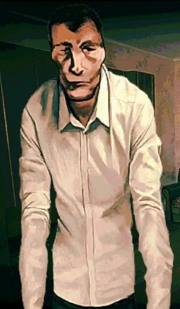
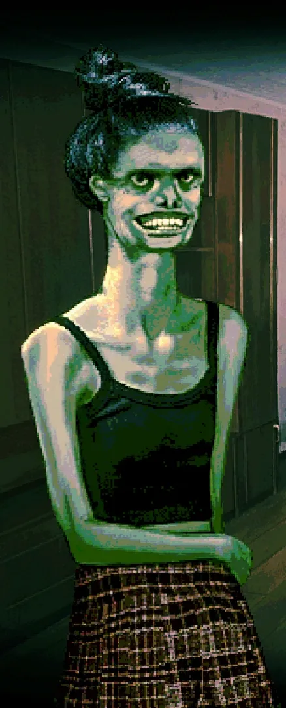
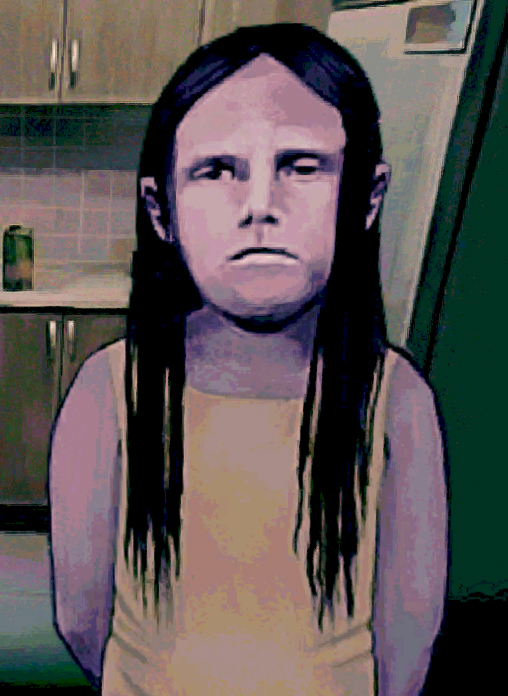
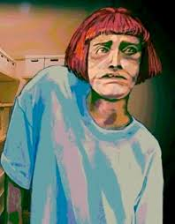

Bem-vindo!
Aqui encontraras um pequeno album de imagens do jogo "No,I'm not a human"
Aqui encontraras um pequeno album de imagens do jogo "No,I'm not a human"
O que é? "NO,I'm not a human" é um jogo de terror psicológico aonde o sol começa a matar toda a gente durante o dia com calor extremo, então todos passam a viver de noite. Mas à noite aparecem criaturas chamadas Visitores que se disfarçam de humanos para entrar nas casas das pessoas e matá-las. Tu ficas em casa com uma espingarda e tens de decidir se cada pessoa que bate à porta é humana ou não. Se matas um humano por engano, há consequências. Se deixas um Visitor entrar... também morres.




Nem tudo o que bate à tua porta merece ser deixado entrar.